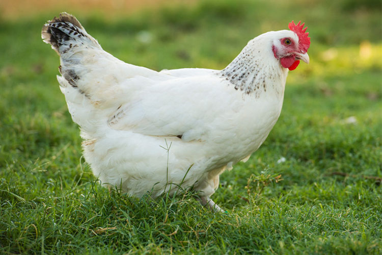

Chicken
The chicken (Gallus gallus domesticus), a subspecies of the red junglefowl, is a type of domesticated fowl, originally from Asia. Rooster or cock is a term for an adult male bird. A younger male may be called a cockerel; a male that has been castrated is a capon. The adult female bird is called a hen. "Chicken" was originally a term only for an immature, or at least young, bird, but thanks to its usage on restaurant menus has now become the most common term for the subspecies in general, especially in American English. In older sources common fowl or domestic fowl were typically used for this. Originally raised for cockfighting or for special ceremonies, chickens were not kept for food until the Hellenistic period (4th–2nd centuries BCE).[1][2] Humans now keep chickens primarily as a source of food (consuming both their meat and eggs) and as pets.
Terminology
An adult male is a called a cock or rooster (in the United States) and an adult female is called a hen.[10][11]
General biology and habitat
Behavior
Social Behavior
Behaviour 2
Aca es H5
Y aca H6
Razas de gallinas:
- Gallinas grandes
- Gallinas grandes 1
- Gallinas grandes 2
- Gallinas pequeñas
- Gallinas peque 1
- Gallinas peque 2
El poema de la gallina
Arranca el corazón á una gallina
Y mételo en el cuerpo de un perdido,
Que limpio ya del fango en que ha vivido
Pasa en el mundo por persona fina.
Aspecto dale de matón de esquina,
Voz campanuda y aire decidido,
Y haz que un Don ennoblezca su apellido
Aunque haya sido pinche de cocina.
Si tuviera pariente encopetado
Ponle de centinela hasta en su cama
Para que viva y duerma descuidado.
Acércale después á cierta dama,
Y tendrás un ministro moderado
De quien no hay que decir cómo se llama.
H2O
Gallina ver imagen
{kind=link}